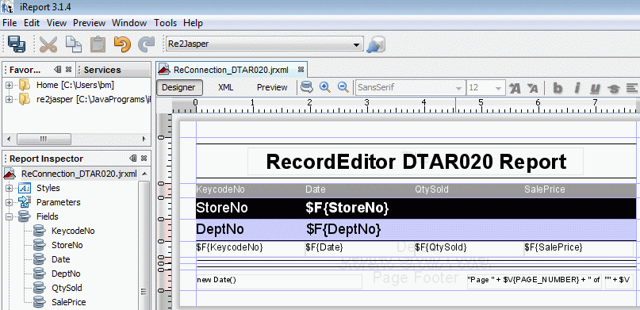
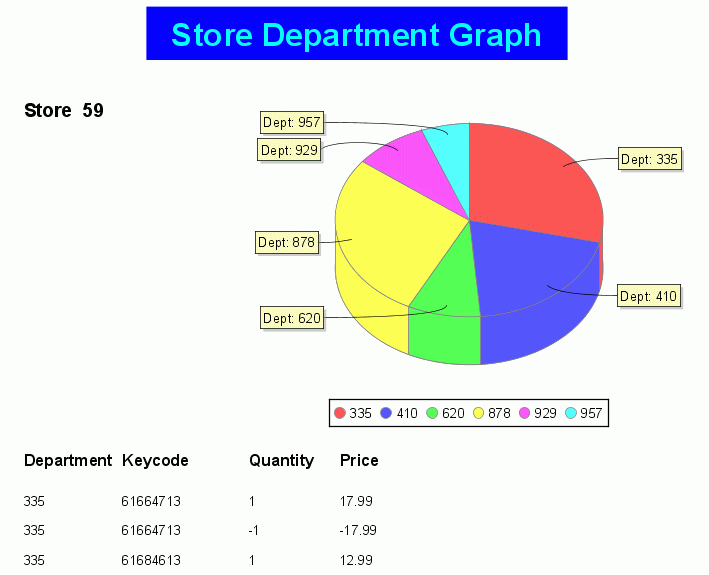

JRecord
JRecord
Reporting |
|||||||||||
|
Reporting |
|||||||||||
There is a seperate project FFReport for reporting on JRecord data files. This is a plugin for iReports, it provides 2 methods of Report Creation:
Warning iReports is basically a SQL Report editor; I have to work with in the constraints of iReports. This means the package is not obvious how things work. I suggest you look at the examples in the guide.
Report Editor Fields can be draged and droped from lefthand side onto the report

Report with graph:
